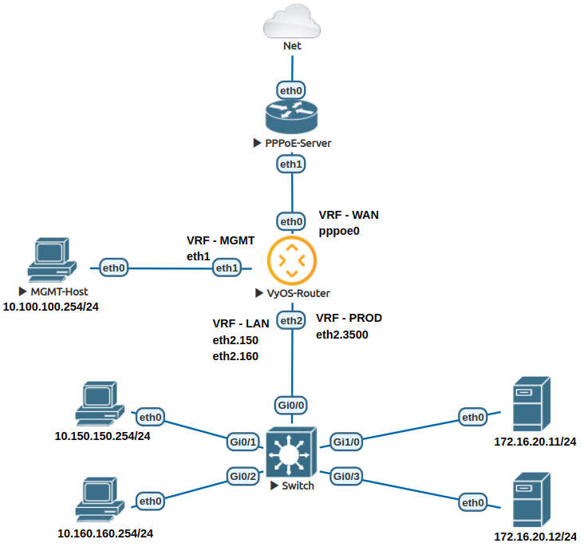

VRF and firewall example
Scenario and requirements
This example shows how to configure a VyOS router with VRFs and firewall rules.
Diagram used in this example:
{kind=link}
As exposed in the diagram, there are four VRFs. These VRFs are MGMT,
WAN, LAN and PROD, and their requirements are:
- VRF MGMT:
Allow connections to LAN and PROD.
Deny connections to internet(WAN).
Allow connections to the router.
- VRF LAN:
Allow connections to PROD.
Allow connections to internet(WAN).
- VRF PROD:
Only accepts connections.
- VRF WAN:
Allow connection to PROD.
Configuration
First, we need to configure the interfaces and VRFs:
set interfaces ethernet eth1 address '10.100.100.1/24'
set interfaces ethernet eth1 vrf 'MGMT'
set interfaces ethernet eth2 vif 150 address '10.150.150.1/24'
set interfaces ethernet eth2 vif 150 vrf 'LAN'
set interfaces ethernet eth2 vif 160 address '10.160.160.1/24'
set interfaces ethernet eth2 vif 160 vrf 'LAN'
set interfaces ethernet eth2 vif 3500 address '172.16.20.1/24'
set interfaces ethernet eth2 vif 3500 vrf 'PROD'
set interfaces loopback lo
set interfaces pppoe pppoe0 authentication password 'p4ssw0rd'
set interfaces pppoe pppoe0 authentication username 'vyos'
set interfaces pppoe pppoe0 source-interface 'eth0'
set interfaces pppoe pppoe0 vrf 'WAN'
set vrf bind-to-all
set vrf name LAN protocols static route 0.0.0.0/0 interface pppoe0 vrf 'WAN'
set vrf name LAN protocols static route 10.100.100.0/24 interface eth1 vrf 'MGMT'
set vrf name LAN protocols static route 172.16.20.0/24 interface eth2.3500 vrf 'PROD'
set vrf name LAN table '103'
set vrf name MGMT protocols static route 10.150.150.0/24 interface eth2.150 vrf 'LAN'
set vrf name MGMT protocols static route 10.160.160.0/24 interface eth2.160 vrf 'LAN'
set vrf name MGMT protocols static route 172.16.20.0/24 interface eth2.3500 vrf 'PROD'
set vrf name MGMT table '102'
set vrf name PROD protocols static route 0.0.0.0/0 interface pppoe0 vrf 'WAN'
set vrf name PROD protocols static route 10.100.100.0/24 interface eth1 vrf 'MGMT'
set vrf name PROD protocols static route 10.150.150.0/24 interface eth2.150 vrf 'LAN'
set vrf name PROD protocols static route 10.160.160.0/24 interface eth2.160 vrf 'LAN'
set vrf name PROD table '104'
set vrf name WAN protocols static route 10.150.150.0/24 interface eth2.150 vrf 'LAN'
set vrf name WAN protocols static route 10.160.160.0/24 interface eth2.160 vrf 'LAN'
set vrf name WAN protocols static route 172.16.20.0/24 interface eth2.3500 vrf 'PROD'
set vrf name WAN table '101'
And before firewall rules are shown, we need to pay attention how to configure and match interfaces and VRFs. In case where an interface is assigned to a non-default VRF, if we want to use inbound-interface or outbound-interface in firewall rules, we need to:
For inbound-interface: use the interface name with the VRF name, like
MGMTorLAN.For outbound-interface: use the interface name, like
eth0,vtun0,eth2*or similar.
Next, we need to configure the firewall rules. First we will define all rules for transit traffic between VRFs.
set firewall ipv4 forward filter default-action 'drop'
set firewall ipv4 forward filter default-log
set firewall ipv4 forward filter rule 10 action 'accept'
set firewall ipv4 forward filter rule 10 description 'MGMT - Allow to LAN and PROD'
set firewall ipv4 forward filter rule 10 inbound-interface name 'MGMT'
set firewall ipv4 forward filter rule 10 outbound-interface name 'eth2*'
set firewall ipv4 forward filter rule 99 action 'drop'
set firewall ipv4 forward filter rule 99 description 'MGMT - Drop all going to mgmt'
set firewall ipv4 forward filter rule 99 outbound-interface name 'eth1'
set firewall ipv4 forward filter rule 120 action 'accept'
set firewall ipv4 forward filter rule 120 description 'LAN - Allow to PROD'
set firewall ipv4 forward filter rule 120 inbound-interface name 'LAN'
set firewall ipv4 forward filter rule 120 outbound-interface name 'eth2.3500'
set firewall ipv4 forward filter rule 130 action 'accept'
set firewall ipv4 forward filter rule 130 description 'LAN - Allow internet'
set firewall ipv4 forward filter rule 130 inbound-interface name 'LAN'
set firewall ipv4 forward filter rule 130 outbound-interface name 'pppoe0'
Also, we are adding global state policies, in order to allow established and related traffic, in order not to drop valid responses:
set firewall global-options state-policy established action 'accept'
set firewall global-options state-policy invalid action 'drop'
set firewall global-options state-policy related action 'accept'
And finally, we need to allow input connections to the router itself only from vrf MGMT:
set firewall ipv4 input filter default-action 'drop'
set firewall ipv4 input filter default-log
set firewall ipv4 input filter rule 10 action 'accept'
set firewall ipv4 input filter rule 10 description 'MGMT - Allow input'
set firewall ipv4 input filter rule 10 inbound-interface name 'MGMT'